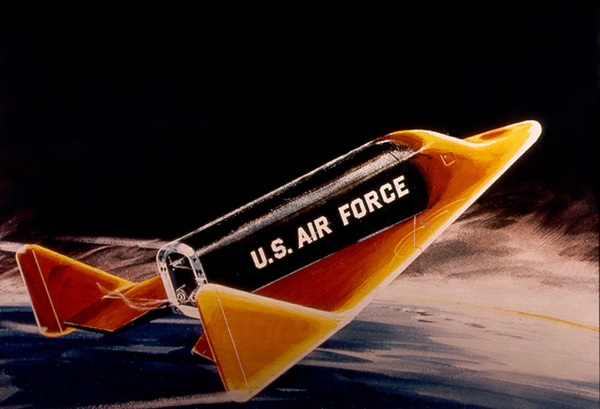

The Boeing X-20 Dyna-Soar (short for Dynamic Soarer) was less of an entire rocket, and more just a spaceplane, which would be attached to the top of a different rocket, and then reach orbit, before it would come back down to Earth, gliding like a normal aircraft, and even landing on a runway. This would make it so that it could be reused, unlike most rockets, where only the capsule returns, and even then is often unable to be used again. While the Dyna-Soar was eventually cancelled before it could be flown, due to a lack of funding, uncertainty over the booster that would carry it, and the lack of a goal for the project, its legacy would live on, as it influenced the design of the Space Shuttle.
